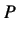
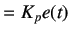
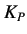
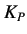

Next: Integral Control Action Up: Theory Previous: Theory
|  |  | (5.1) |
The value of  is very important. A large value of
is very important. A large value of  may lead to instability of the system. In contrast,
a smaller value of  may decrease the controller's sensitivity towards error. The problem involved in using only
proportional action is that the control action will never settle down to its target value and will always retain
a steady-state error.
may lead to instability of the system. In contrast,
a smaller value of  may decrease the controller's sensitivity towards error. The problem involved in using only
proportional action is that the control action will never settle down to its target value and will always retain
a steady-state error.